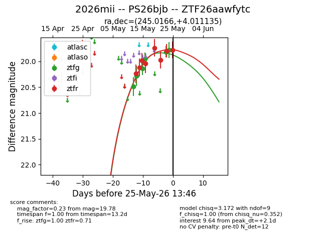
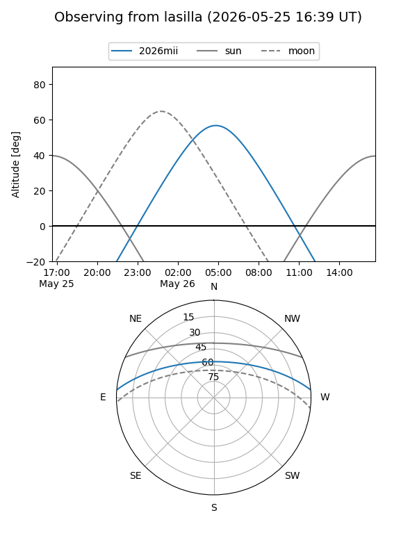
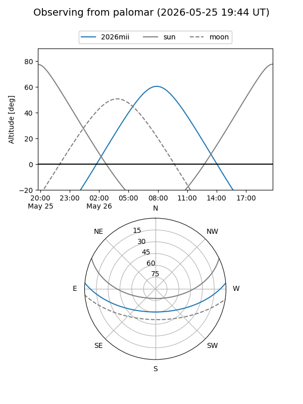
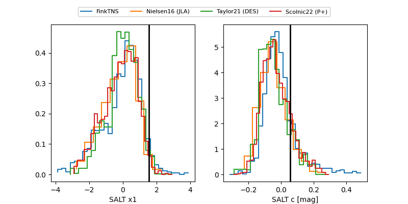

2026mii
Target 2026mii at 2026-05-25 13:48
Aliases and brokers:
lsst-FINK: link
lsst-Lasair: link
lsst-ALeRCE: link
ztf-FINK: link
ztf-Lasair: link
ztf-ALeRCE: link
TNS: link
YSE: link
alt names
ZTF26aawfytc (ztf,fink_ztf)
2026mii (tns,yse)
PS26bjb (panstarrs)
Coordinates:
equatorial (ra, dec) = 245.0166,+4.01113
equatorial (HMS+DMS) = 16:20:03.99,+04:00:40.09
galactic (l, b) = (17.5441,+35.20929)
Flags:
Photometry:
last ztfg=19.78, ztfr=19.78
6 ztfg, 8 ztfr detections
Lightcurve

Visibility


Additional plots
